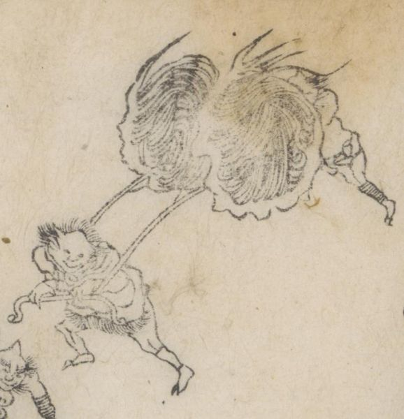

← 图鉴索引

火車を引く鬼。火車を後ろから押す鬼。車輪が燃えている。
著作者：蹄齋北馬／出典：親書誌：U426_nichibunken_0443：俊徳麻呂謡曲演義／日付：2017／資源識別子：U426_nichibunken_0443_0007_0000
Copyright (c)2010- International Research Center for Japanese Studies, Kyoto, Japan. All rights reserved.